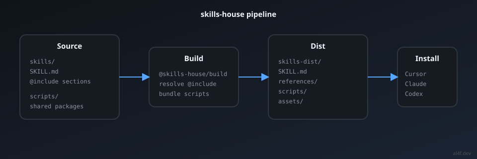
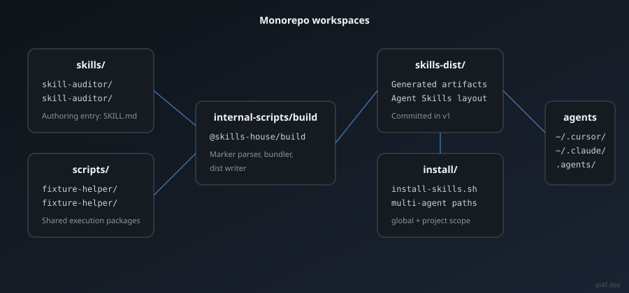

Agent Skills give coding agents reusable expertise — structured instructions, references, and scripts that load when the task matches. Cursor, Claude Code, Codex, and other tools are adopting the format. Skills work well for a single file. They get messy at scale.
I built skills-house to solve that. This article explains why a build pipeline between source and dist is the missing layer — and what design decisions matter when you author skills for production use.
What Agent Skills are
An Agent Skill is a directory an agent can load: a required SKILL.md, plus optional
references/, scripts/, and assets/. The agent reads the skill when
its description matches the task. Progressive disclosure keeps context small — references load on demand.
The open specification defines the dist layout: what agents consume. It does not define how authors should structure source files while writing. That gap is where pain shows up.
The authoring pain at scale
Once you maintain more than one skill, the same problems repeat:
- Duplicated scripts — the same shell helper copied into three skill directories
- Bloated SKILL.md — a 400-line file that burns context every activation
- Manual install paths — copying into
~/.cursor/skills,.agents/skills,~/.claude/skillsby hand - No shared build step — source and dist diverge; you edit one, forget the other
These are not Agent Skills spec problems. They are authoring infrastructure problems — the same class of problems front-end teams solved with bundlers, and docs teams solved with static site generators.
Source vs dist: why a build step matters
skills-house splits authoring from distribution:

- Source (
skills/) — freeform layout. OnlySKILL.mdis required. - Build (
@skills-house/build) — compiles markers and links into spec-compliant output. - Dist (
skills-dist/) — what agents load. Always valid Agent Skills layout. - Install — one command targets Cursor, Claude, Codex, or all at once.
Authors optimize for readability and reuse. Agents optimize for a fixed contract. A build step lets both win.
One marker philosophy: @include only

skills-house uses exactly one build marker: @include /path/to/fragment.md. Everything else is a
standard markdown link. No custom @ref, no magic syntax per package type.
---
name: my-skill
description: What it does and when to use it.
---
# My Skill
@include /sections/workflow.md
Read [the guide](/references/deep-dive.md) when needed.
Run [hello](fixture-helper/hello).Link resolution follows one rule:
/path(leading slash) → in-package file, copied to distpackage/export(no leading slash) → workspace package reference
Shared scripts live in scripts/ as reusable packages. Skills reference them by export name instead
of copy-pasting shell files. The build bundles resolved files into each skill's dist scripts/ folder.
Multi-agent install strategy
Different agents read skills from different paths. skills-house installs from one dist output:
- Global:
~/.cursor/skills/,~/.claude/skills/,~/.agents/skills/ - Project:
.agents/skills/,.cursor/skills/,.claude/skills/
pnpm build
pnpm install:skills --scope project # this repo
pnpm install:skills # all agents, global
Build once. Install everywhere. The install script is a thin layer over skills-dist/ — no
per-agent authoring forks.
How we built skills-house

Honest architecture decisions:
- Paper first, code second — specs in
specs/before implementation - Committed dist in v1 — inspectable PRs; you see exactly what agents load
- pnpm workspaces — skills, scripts, and build tooling in one monorepo
- esbuild for script graphs — bundle namespace exports from
scripts/packages - No dist validation — if build is correct, dist is correct by construction
Deferred on purpose: npx skills add, per-skill npm packages, nested @include.
Infrastructure before distribution. Authority before vanity metrics.
What this means for skill authors
If you maintain one skill as a flat SKILL.md, you may not need a build pipeline yet.
If you maintain a library of skills with shared scripts and modular sections, you will — whether you
build it yourself or use a toolkit.
skills-house is my answer. Clone it, read the specs, and adapt the patterns. The goal is not stars — it's making Agent Skills infrastructure a solved problem that developers associate with clear conventions.
Next: How I built skill-auditor — a walkthrough of authoring a second reference skill in the monorepo.